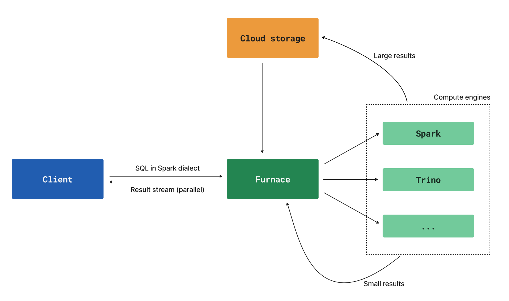

Furnace is Foundryâs modern SQL warehousing engine, purpose-built for flexibility, performance, and extensibility. Furnace lets you run powerful, flexible SQL queries on your data, using the latest industry standards for compute and interoperability. With Furnace, you can run read/write SQL on top of Foundry compute, both natively inside Foundry and from your choice of third-party analytics tools. Furnace is engineered from first principles to support multiple compute engines behind a common syntax, providing future-proofing and resilience for your SQL workloads.
Furnaceâs architecture decouples query parsing and planning from query execution. This separation is key to Furnace's flexibility and extensibility:
This architecture diagram demonstrates the information flow for interactive Furnace queries:

Furnace's compute engine abstraction allows Palantir to update and optimize supported engines over time.
Currently supported Furnace engines are:
Furnace provides a unified SQL experience across all connection methods:
All connection methods benefit from Furnace's intelligent engine selection and performance optimizations, regardless of how you connect to Foundry.